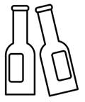

Prev - #22 Rock, Paper, Scissors | Table of Contents | Next - #24 Every 15 Minutes
99 bottles of beer on the wall,
99 bottles of beer,
Take one down,
Pass it around,
98 bottles of beer on the wall,

“99 Bottles of Beer on the Wall” is a cumulative song often sung to pass the time (and annoy anyone close to the singer). Long, tedious activities are the perfect task for computers. In this exercise, you’ll write a program to display the complete lyrics of this song.
Exercise Description
Write a program that displays the lyrics to “99 Bottles of Beer.” Each stanza of the song goes like this:
X bottles of beer on the wall,
X bottles of beer,
Take one down,
Pass it around,
X – 1 bottles of beer on the wall,
The X in the song starts at 99 and decreases by one for each stanza. When X is one (and X – 1 is zero), the last line is “No more bottles of beer on the wall!” After each stanza, display a blank line to separate it from the next stanza.
You’ll know you have the program correct if it matches the lyrics at https://inventwithpython.com/bottlesofbeerlyrics.txt. It looks like the following:
99 bottles of beer on the wall,
99 bottles of beer,
Take one down,
Pass it around,
98 bottles of beer on the wall,
98 bottles of beer on the wall,
98 bottles of beer,
Take one down,
Pass it around,
97 bottles of beer on the wall,
…cut for brevity…
1 bottle of beer on the wall,
1 bottle of beer,
Take one down,
Pass it around,
No more bottles of beer on the wall!
Try to write a solution based on the information in this description. If you still have trouble solving this exercise, read the Solution Design and Special Cases and Gotchas sections for additional hints.
Prerequisite concepts: for loops, range() with three arguments, print()
Solution Design
Use a for loop to loop from 99 down to, but not including, 1.
The 3-argument form of range() can do this with:
for numberOfBottles in range(99, 1, -1)
The numberOfBottles variable starts at
the first argument, 99. The second argument, 1, is the value that numberOfBottles
goes down to (but does not include). This means the last iteration sets numberOfBottles to 2. The third
argument, -1, is the step argument and changes numberOfBottles by -1 instead
of the default 1. This causes the for loop to decrease the loop variable rather than
increase it.
For example, if we run:
for i in range(4, 0, -1):
print(i)
...it would produce the following output:
4
3
2
1
If we run:
for i in range(0, 8, 2):
print(i)
...it would produce the following output:
0
2
4
6
The 3-argument form of range() allows
you to set more detail than the 1-argument form, but the 1-argument form is
more common because the start and step arguments are often the default 0 and 1, respectively. For
example, the code for i in range(10) is the
equivalent of for i in range(0, 10, 1).
Special Cases and Gotchas
Python’s print() function accepts
multiple arguments to display. These arguments can be strings, integers,
Booleans, or values of any other data type. The print()
function automatically converts the argument to a string. However, keep in mind
that you can only concatenate a string value to another string value. So while
these two lines of code are valid:
· print(numberOfBottles, 'bottles of beer,')
· print(str(numberOfBottles) + ' bottles of beer,')
This line of code produces a TypeError:
unsupported operand type(s) for +: 'int' and 'str' error message because
numberOfBottles holds an integer and the + operator cannot concatenate integers to strings.
· print(numberOfBottles + ' bottles of beer,')
The latter line of code is trying to pass a single argument to print(): the expression numberOfBottles
+ ' bottles of beer,' evaluates to this single value. This differs from the
first two examples where two arguments, separated by a comma, are passed to print(). The difference is a subtle but important. While print() automatically converts arguments to strings,
string concatenation doesn’t and requires you to call str()
to perform this conversion.
Even the word “convert” is a bit of a misnomer here: function
calls return brand new values rather than change an existing value. Calling len('hello') returns the integer value 5. It’s not that the string 'hello'
has been changed
to the integer 5. Similarly, calling str(42) or int('99') doesn’t
change the argument but returns new values.
This is why code such as str(numberOfBottles)
doesn’t convert the integer in the numberOfBottles
variable to a string. Instead, if you want to change the variable, you need to
assign the return value to the variable like:
numberOfBottles = str(numberOfBottles)
Don’t think of this as modifying the value in numberOfBottles, but rather replacing it with the value
returned from the str() function call.
Now try to write a solution based on the information in the previous sections. If you still have trouble solving this exercise, read the Solution Template section for additional hints.
Solution Template
Try to first write a solution from scratch. But if you have difficulty, you can use the following partial program as a starting place. Copy the following code from https://invpy.com/bottlesofbeer-template.py and paste it into your code editor. Replace the underscores with code to make a working program:
# Loop from 99 to 2, displaying the lyrics to each stanza.
for numberOfBottles in range(99, 1, ____):
print(____, 'bottles of beer on the wall,')
print(____, 'bottles of beer,')
____('Take one down,')
____('Pass it around,')
# If there is only one, print "bottle" instead of "bottles".
if (numberOfBottles - 1) == ____:
____('1 bottle of beer on the wall,')
____:
print(____ - 1, ' bottles of beer on the wall,')
# The last stanza has singular "bottle" and a different final line:
____('1 bottle of beer on the wall,')
____('1 bottle of beer,')
____('Take one down,')
____('Pass it around,')
____('No more bottles of beer on the wall!')
The complete solution for this exercise is given in Appendix A and https://invpy.com/bottlesofbeer.py. You can view each step of this program as it runs under a debugger at https://invpy.com/bottlesofbeer-debug/.
Further Reading
Project #50 in my book, The Big Book of Small Python Projects, also implements this “99 bottles of beer” exercise. You can read it for free online at https://inventwithpython.com/bigbookpython/. Project #51 is a version where the lyrics deteriorate over time with erased letters, swapped letters, and other drunken typos.
Prev - #22 Rock, Paper, Scissors | Table of Contents | Next - #24 Every 15 Minutes